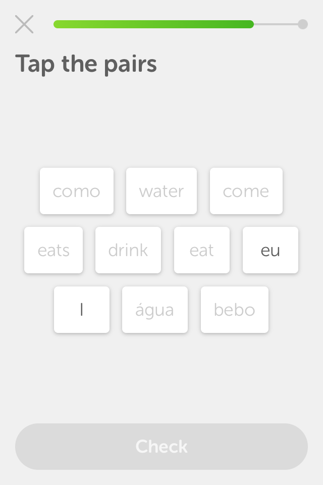
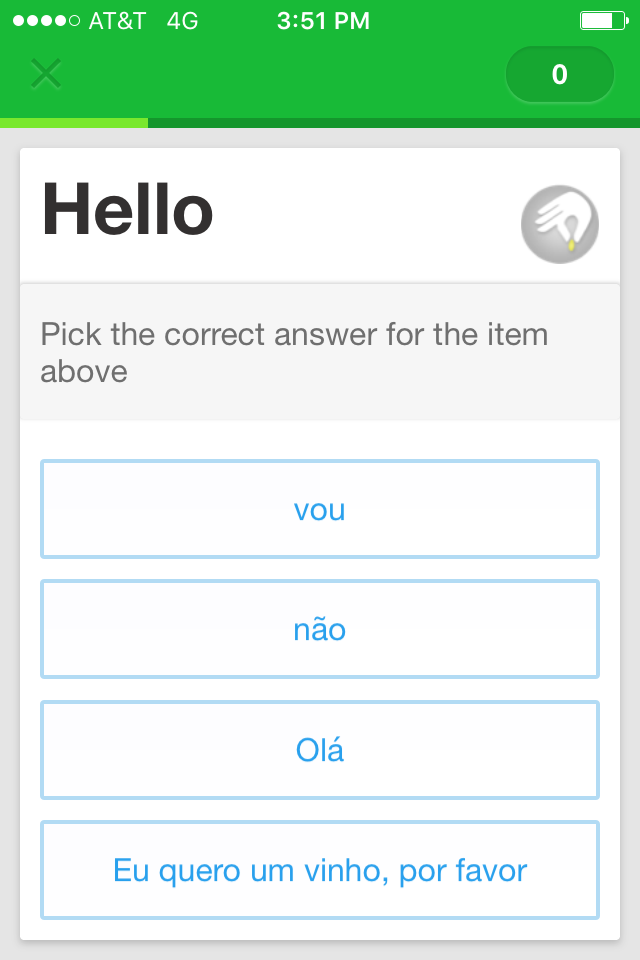
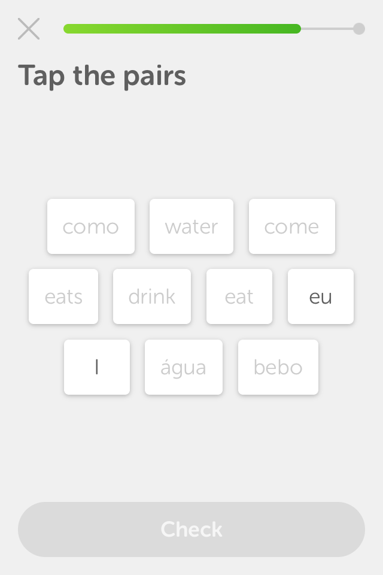
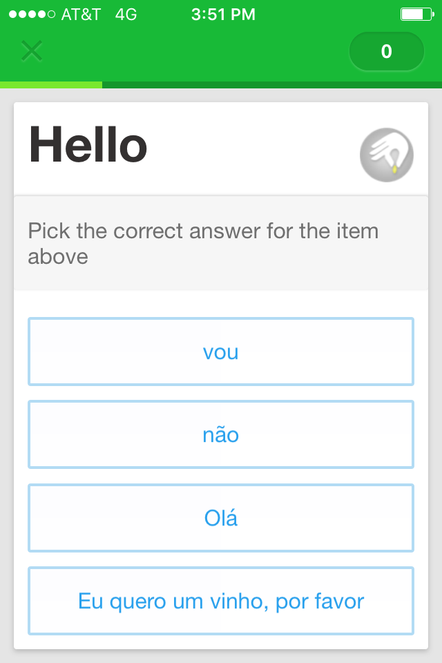
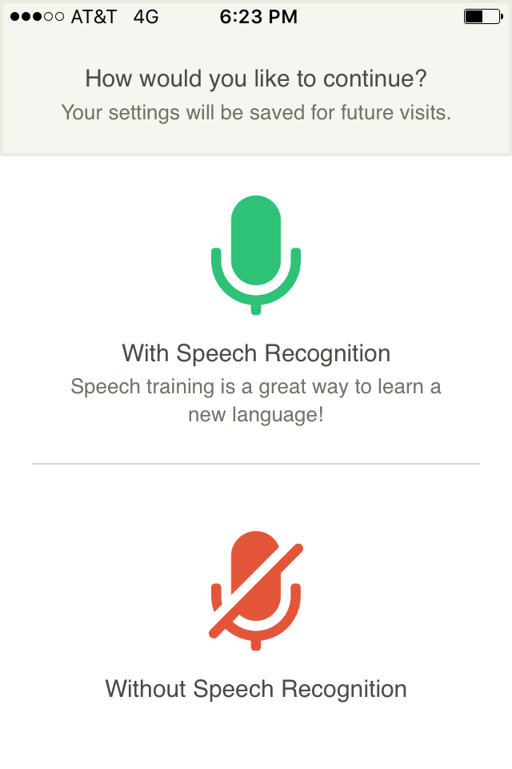
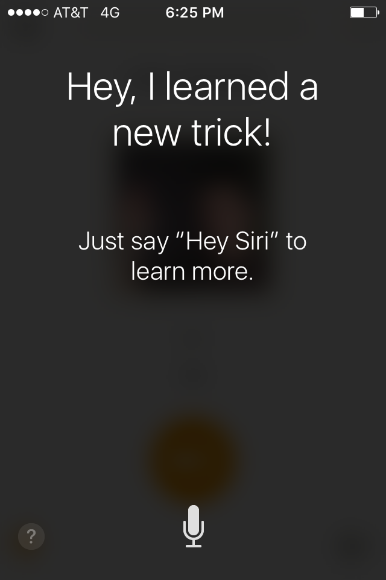
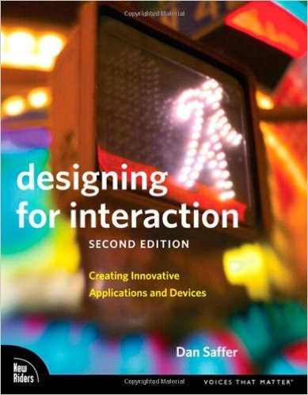

LanguageBug
Individual Project Focus
Landscape Audit
 



NOT Focused
NO Speaking
NO Challenge
SUPER Slow
Teaching Experience
No grammar!
No tests!
No correction!
No homework!
Introduction (2')
Lesson Demo (5')
Design Challenge (5')
Discussion (8')
Portuguese Beginner
Is there anyone who would not like to participate?
Rules of the Game:
1. Try not to be shy!
2. Please, speak aloud.
3. Don't write down anything.
4. Follow my instructions.
- Meu nome completo é _______.
- Todo mundo me conhece como ______.
- Eu nasci em _______.
- Eu atualmente moro em ________.
- Eu estou estudando ________ na ________.
That's it!
Introduce yourself
to the person next to you
Data
5 minutes
17 new words
10-15 seconds
Challenging?
Focused?
[Feedback]
Provide encouragement
Praise effort
No matter how you spoke it
No matter how you spoke it
Assumptions
It won't be perfect!
You'll do it again.
Encourage > Correct
Encourage > Correct
Speech Recognition
 NOPE!
Waaaaaay simpler/faster
Self-motivated learners
Maaike's Challenge
How to provide non-corrective, or maybe even
"dumb" feedback in a clever way?
Rules/Guidelines
Trustworthy
“Before we’ll use a tool, we have to trust that it can do the job” (p. 60).
Responsive
“We need to know that the product ‘heard’ what we told it” (p. 64).
Clever
“intelligence without smugness or condescension. … And it also implies delight.” (p. 65).
How to provide non-corrective, or maybe even
"dumb" feedback in a clever, responsive way?
or
How to be responsive, without being corrective?